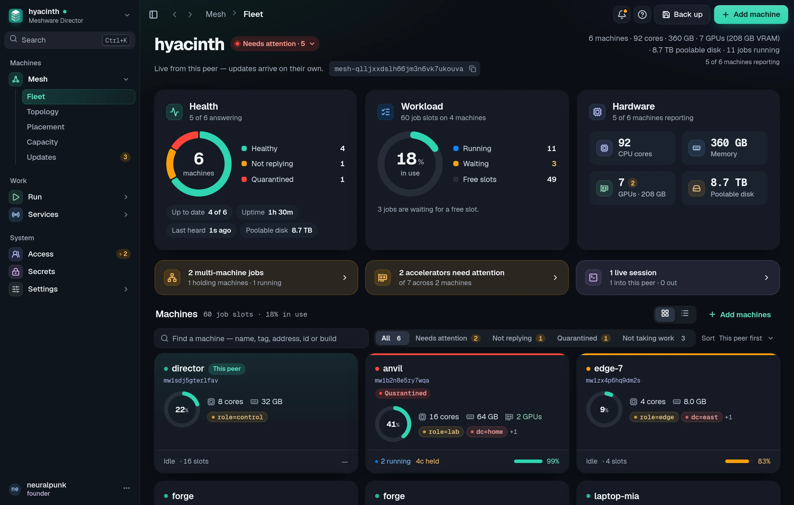
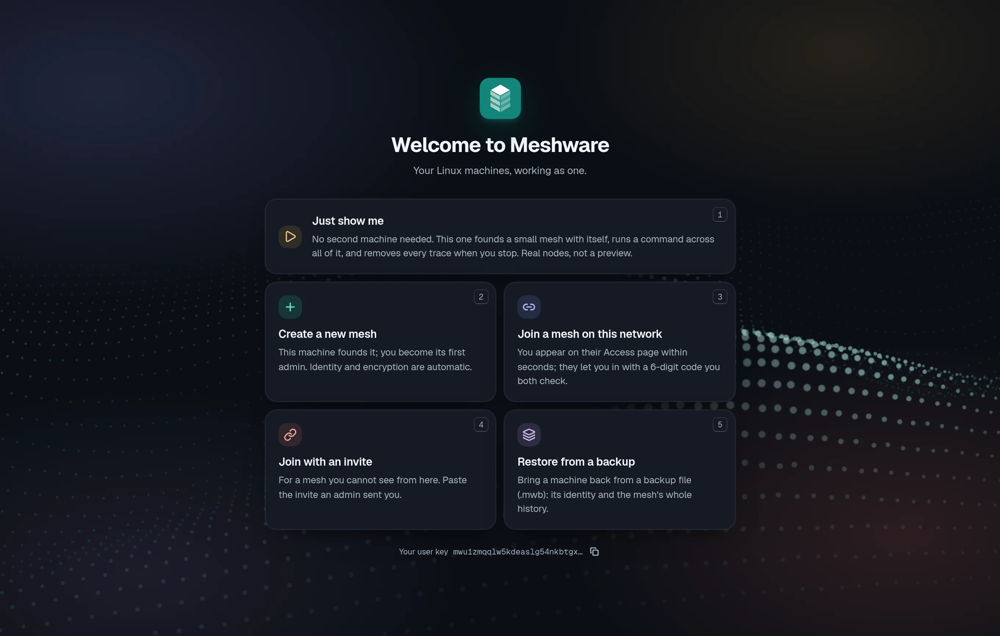
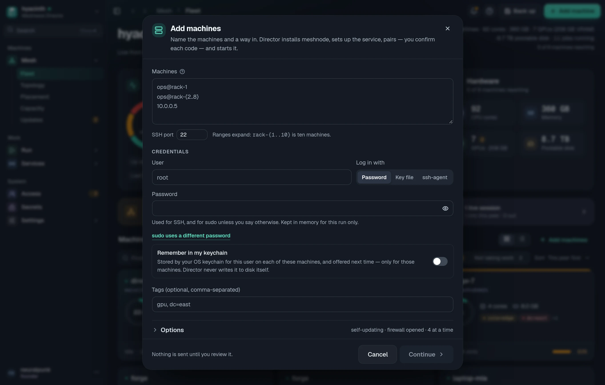
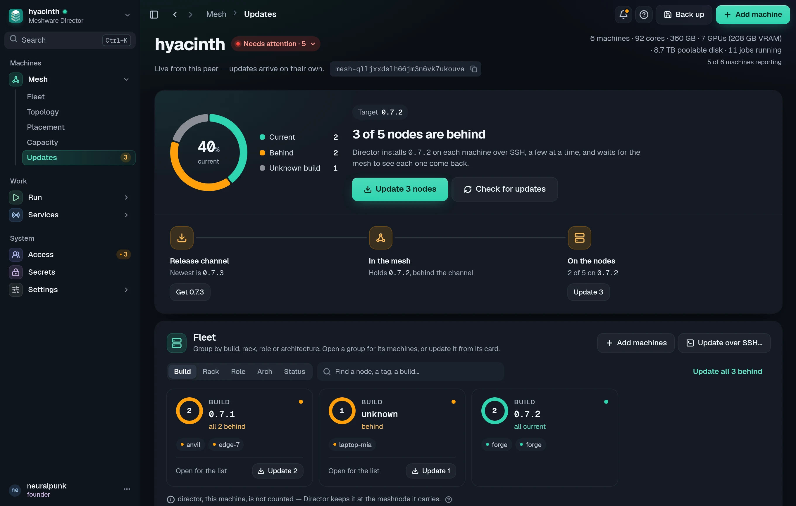
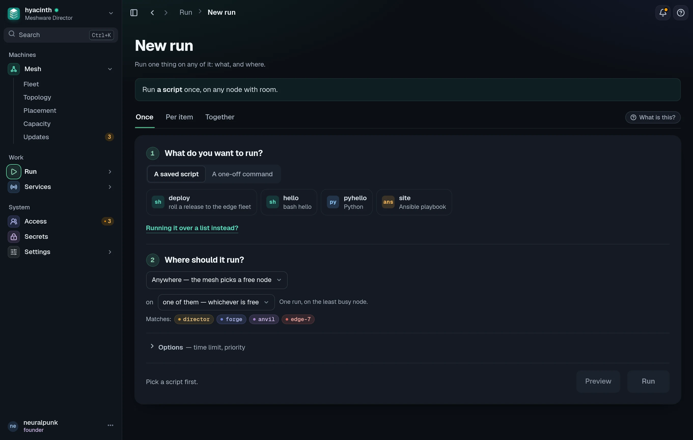
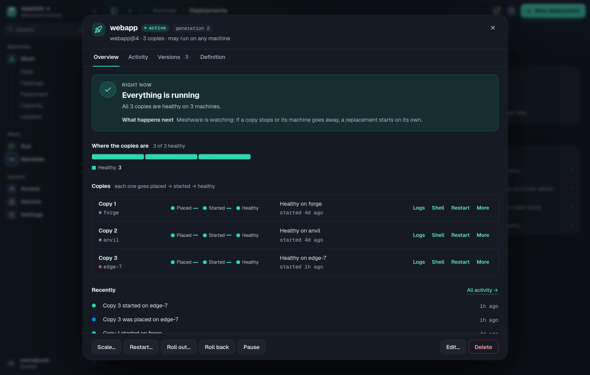
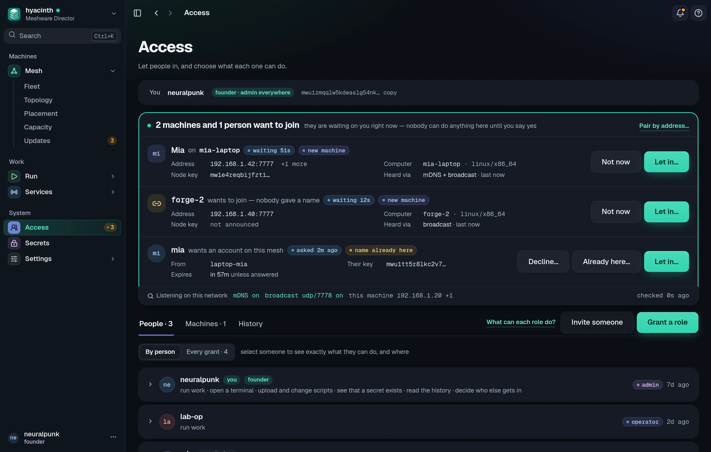
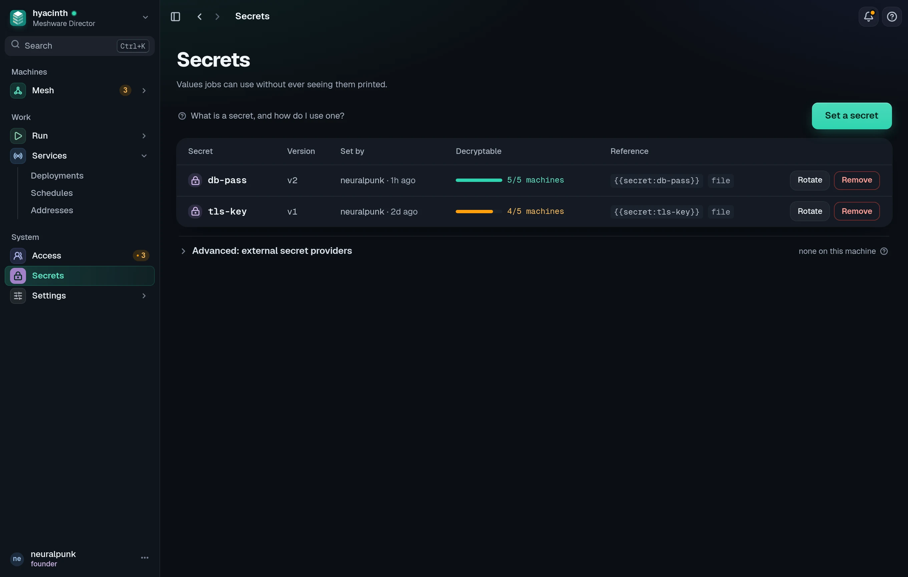

What Meshware is
Meshware turns the Linux machines you already have into one computer. Install one binary on each, pair them, and they pool their CPUs, memory and GPUs, with no server to set up first.
Most tools that spread work across machines begin with "first, stand up the control plane": servers, a database and a quorum that must be kept alive before any real work can run. Meshware begins with "run this on any machine". Every machine is equal, holds a copy of everything the mesh knows, and keeps working if the others go away.
How the pieces fit
There are only two things to install, and only the first is required.
meshnodeis one static binary that is both the node and the command line. Run on a machine, it joins that machine to the mesh. Typed in a terminal, it is how you talk to the mesh.- Meshware Director is the desktop app. It shows the whole mesh live and does everything the command line does, with buttons. It is a view onto your own computer's node, not a server of its own.
When you ask for something, you ask one machine: the one you are on, or any other. That machine decides where the work should run and sends it there. Every request carries your signature, and every machine checks it against the roles you have been given. A machine that is down is simply not chosen.
No control plane
"No control plane" means there is no special machine in charge: no database to run, no quorum to maintain and no master to fail over. Each machine keeps its own copy of the mesh's shared state (members, people, roles, deployments, schedules and audit history), and the copies converge over the network. So installing Meshware is installing one file, any machine can answer for the whole mesh, and a machine cut off from the others keeps running what it has and catches up by itself later.
The trade is that state converges rather than being agreed by a vote. If two admins change the same thing on both sides of a network split, both changes succeed and the later one wins when the halves meet. That is the right trade for a fleet of machines, and the wrong one for something like a bank ledger.
Keys, pairing and roles
Meshware has no passwords, no login screen and no certificates to manage. Instead, every machine and every person is a key.
- A machine joins the mesh by pairing with a six-digit code on the local network, or with a single-use invite token from anywhere. Both screens show the same code, so you know the machine you let in is the one you meant.
- A person is a key that lives on their own computer, in
~/.meshware/identity/user.key. Every request they make is signed with it. - Whoever founds a mesh becomes its first admin. Everyone else asks to be let in, and an admin gives them a role:
admin,operator,developer,auditororviewer. A role can apply to the whole mesh or to some machines, and can expire.
Every connection between machines is encrypted, and every job is confined to its own directory and held to its own CPU and memory limits.
What it is good for
- Running commands across machines. Check every server's disk, patch level or configuration in one command, and get one answer per machine.
- Spreading a big batch. Process thousands of files or hosts, with each machine pulling the next item when it finishes one, so a 32-core box does about twice the work of a 16-core one.
- Keeping services up. Describe a web server or worker once, and Meshware keeps the copies running, rolls out changes carefully and moves copies off machines that fail.
- GPU and multi-machine jobs. Ask for real, assigned GPUs, or for several machines that must start together.
- Faster builds. Put
meshnode ccin front of your compiler and a C or C++ build spreads across the mesh, and never compiles the same file twice. - Letting a team in safely. Give each person the smallest role they need, keep passwords out of scripts with secrets, and keep a signed audit log of who did what.
What it is not for
Meshware is built for trusted administrator automation and semi-trusted team workloads. It is not a multi-tenant sandbox for arbitrary untrusted code, and you should not use it as one.
Each job is confined to its own directory by Linux Landlock and held to its CPU and memory by its own cgroup, but there is no seccomp filter, no per-job user separation and no network restriction beyond what the host imposes. If you need to run code from people you do not trust, use a tool built for that.
A few other things it deliberately does not try to be: a secrets-management platform (it integrates with Vault rather than replacing it), a service mesh, an image builder or registry, or a workflow engine. Teams that must not see each other's work should run two separate meshes, because there is no namespace concept inside one mesh.
Meshware is free and open source under your choice of the MIT or Apache 2.0 licence, with no plans, tiers, machine limits, accounts or telemetry.
The words you will meet
- Machine, or node
- A computer running
meshnode. Each one runs work, and each one can answer for the whole mesh. - Mesh
- Every machine that has joined together. A machine belongs to one mesh.
- Job
- One command run once, on one machine or on many. It ends, and its output and result are kept.
- Deployment
- Something that should keep running, such as a web server or a queue worker. Meshware starts the copies you asked for and replaces any that stop.
- Schedule
- A job that runs itself on a clock: every hour, or at 03:00.
- Person
- Somebody allowed to use the mesh. A person is a key on their own computer, not a password.
- Role and grant
- A role is what a person may do:
admin,operator,developer,auditororviewer. A grant gives a role, optionally narrowed to some machines and for a limited time. - Secret
- A password or token a job needs, stored encrypted and handed only to the job that uses it.
- Tag
- A label on a machine, like
gpuordc=east, used to choose where work goes. - Selector
- The expression that chooses machines, such as
any,web-01ortag=gpu. - Runtime
- The kind of thing a job is: a binary, a shell script, Python, an Ansible playbook or a container. Each machine detects what it can run.
- Director
- The desktop app. It does everything the command line does, and shows the mesh live.
More: What Meshware is · How it works without a control plane
Installing Meshware
Meshware is one static binary with no runtime dependencies, so installing it means putting that file on each machine. There are several ways to do it; pick the one that suits how you already manage machines.
What you need
- Linux, on
x86_64oraarch64. The binary is statically linked (musl), so the distribution and its glibc version do not matter. There is no macOS or Windows build, by design. - UDP port 7777 open between every pair of machines in the mesh. The mesh speaks QUIC, which runs over UDP, so opening TCP 7777 does nothing.
- Optionally,
sudoto put the binary in/usr/local/bin, and the GitHub CLI (gh) to prove where a download came from.
Nothing else: no database, no server to set up first, no certificates and no account. Some features turn on when the machine has more to offer: a 5.13 or newer kernel for job sandboxing, cgroups v2 with systemd for enforced CPU and memory limits, and podman or docker, Python 3, ansible-playbook or GPU drivers for those kinds of work. Each machine finds these by itself, and meshnode doctor tells you what is missing.
From a release tarball
This is the one to start with, and it works on any machine. Download meshnode-v<version>-<arch>-unknown-linux-musl.tar.gz and SHA256SUMS from the Releases page, where <arch> is what uname -m prints.
Check the download before you run anything. The checksum catches a file that was cut short or corrupted. The build-provenance attestation goes further: it proves the file was built from the Meshware repository by its release workflow, which a checksum served beside the file cannot.
$ sha256sum --ignore-missing -c SHA256SUMS
$ gh attestation verify meshnode-v1.1.0-x86_64-unknown-linux-musl.tar.gz --repo neuralpunk/meshware
$ tar xzf meshnode-v1.1.0-x86_64-unknown-linux-musl.tar.gz
$ sudo install -m755 meshnode /usr/local/bin/
$ meshnode --versionIf the attestation check fails, the file is not one Meshware's release workflow built. Do not install it. The tarball also carries the systemd unit (meshnode.service), the man page and the licences.
With the one-line installer
For one machine, one command:
$ curl -fsSL https://raw.githubusercontent.com/neuralpunk/meshware/main/packaging/install.sh | shIt detects the architecture, downloads the tarball and installs the binary to /usr/local/bin, or to ~/.local/bin without root. It does not start anything or write any configuration.
It always checks the download against SHA256SUMS. When the GitHub CLI is installed and logged in, it also runs gh attestation verify; when it cannot, it says so in capitals. Set MESHWARE_REQUIRE_SIGNATURE=1 to make a missing provenance check a hard failure, and MESHWARE_VERSION to pin a release.
From a .deb or .rpm package
If you already manage machines with configuration management, use the packages, so upgrades go through apt or dnf like everything else.
$ sudo dpkg -i meshnode_1.1.0_x86_64.deb
# or
$ sudo rpm -i meshnode-1.1.0.x86_64.rpmA package installs to /usr/bin, creates the meshnode system user and installs a hardened systemd unit. Packages need systemd. Do not start the service yet if the machine should join an existing mesh: see Running it as a service.
On machines you can already reach over SSH
Once you have one machine in a mesh, you can install and join many more from it in one step:
$ meshnode adopt ops@rack-{1..10}adopt installs the binary, sets it up as a system service with its own account, opens the mesh port in the firewall, pairs each machine (showing you the confirmation codes) and starts it. After this, SSH is never needed again. Director does the same from Mesh › Fleet › Add machines. Adding machines over SSH has the details.
From source
Building needs Linux, Rust and a C compiler. Clone the repository and let make do the rest:
$ git clone https://github.com/neuralpunk/meshware && cd meshware
$ make doctor # what this machine has, and what each build needs
$ make # meshnode and meshware-archive, optimised
$ sudo make install # binaries, man pages, bash/zsh/fish completions
$ sudo make install-service # optional: the systemd unit and the meshnode accountmake STATIC=1 builds the static musl binaries the releases ship, and needs musl-gcc. make install-service installs the unit and never starts it. make help lists every target.
Director, the desktop app
Director runs on Linux desktops. Packaged installers are not published yet, so for now you build it from the source tree on the machine that will run it, or on one like it:
$ make doctor # says whether Node.js and WebKitGTK are installed
$ make director WITH_NODE=1 # about four minutes; carries a meshnode for this machine
$ sudo make install-director # optional: /usr/local/bin/meshware-directorThe build needs Node.js 20 or newer and the WebKitGTK 4.1 development packages, as well as Rust; make doctor names the package for your distribution. Plain make director works too; WITH_NODE=1 carries a static meshnode inside Director so it can install this computer's node for you. The Director section covers what happens on first start.
Running it as a service
For a server, you want the node to start at boot and keep running after you log out. The packaged unit runs it as the unprivileged meshnode system user, in /var/lib/meshware. Root is never required.
# on a machine that should join an existing mesh:
$ sudo -u meshnode meshnode join mwj1… # or: sudo -u meshnode meshnode pair
$ sudo systemctl enable --now meshnodeOn the machine founding a new mesh, sudo systemctl enable --now meshnode on its own is right.
If you installed from the tarball, create the service account and unit by hand, once:
$ sudo useradd --system --home-dir /var/lib/meshware --shell /usr/sbin/nologin meshnode
$ sudo install -d -o meshnode -g meshnode -m 0750 /var/lib/meshware
$ sudo install -d /etc/meshware
$ sudo install -m755 meshnode /usr/local/bin/
$ sudo install -m644 meshnode.service /etc/systemd/system/
$ sudo mkdir -p /etc/systemd/system/meshnode.service.d
$ printf '[Service]\nExecStart=\nExecStart=/usr/local/bin/meshnode up\n' | \
sudo tee /etc/systemd/system/meshnode.service.d/path.conf
$ sudo systemctl daemon-reloadThe unit names /usr/bin/meshnode, where the packages put it; the drop-in points it at /usr/local/bin. To run containers under the service, the account also needs a sub-ID range; see Runtimes.
After you edit the configuration, sudo systemctl reload meshnode applies most settings without a restart, and the journal names anything that needs one. A stop gives running jobs 30 seconds to finish ([shutdown] grace_secs).
Where things live
| What | Packaged service | Started by you with meshnode up |
|---|---|---|
| Binary | /usr/bin/meshnode (package) or /usr/local/bin/meshnode (tarball) | wherever you installed it |
| Data: identity, state, jobs, content | /var/lib/meshware | ~/.meshware |
| Configuration (optional) | /etc/meshware/meshnode.toml | ~/.meshware/meshnode.toml |
| Logs | journald (journalctl -u meshnode) | the terminal, or journald for a user service |
One directory holds everything a node is. meshnode config paths prints every path a node uses, and whether it exists.
Using the command line on a server
A packaged node runs as the meshnode account, and only that account can reach its socket. On the server, run commands as that account, with sudo -u meshnode rather than plain sudo (as root, the command line looks in /root/.meshware):
$ sudo -u meshnode meshnode doctor
$ sudo -u meshnode meshnode status
$ journalctl -u meshnode -n 50Most of the time you will not need to be on the server at all. Run a node or Director on your workstation, have your own key enrolled with a role, and manage every machine from there.
More: Installing a node · Platforms
Your first mesh
From nothing to two machines running your commands, in about ten minutes. If you only have one machine, start with the demo: it is a real mesh, on loopback, gone when you stop it.
Try it on one machine
No second machine, or not ready to install anything yet? Run the demo:
$ meshnode demoThis starts three real nodes on 127.0.0.1, joins them together, runs a command across all of them, and removes every trace when you press Ctrl+C. These are the shipped daemon, scheduler and transport, not a simulation. Nothing touches ~/.meshware, nothing is announced on your network, and a demo node cannot join a real mesh.
meshnode demo --nodes 6pretends to be six machines (2 to 16 are allowed).meshnode demo --stoptears a demo down from another shell.- From a clone of the repository,
make demobuildsmeshnodethe first time and then runs the demo;make demo-stopstops it. - Director's welcome screen offers the same thing as Just show me.
Start the first machine
Install meshnode on every machine that will be in the mesh (see Installing Meshware). Then, on the first machine:
$ meshnode up
Welcome. This machine is founding a new mesh.
mesh alpha-mesh
node alpha
listening 0.0.0.0:7777
…meshnode up runs in the foreground, so leave it running and open a second terminal. The first time it runs it creates this machine's identity and founds a new mesh, with you as its administrator. (meshnode up --detach installs and starts it as your own systemd user service instead.) Check it:
$ meshnode status
Meshware Node 1.1.0
node mw1xqka4662aop7 (alpha)
mesh alpha-mesh (mesh-t33bwjcpisf7izqu3m7t6xncge)
members 1 alive / 1 total
jobs 0 running, 0 queued (16 slots)
runtimes exec, bash, python, ansible, container
…
$ meshnode doctordoctor runs every check this machine can make on itself: network, clock, disk, ports and sandbox. A one-machine mesh already works: meshnode run 'uname -a' runs a command on it.
Add a second machine
The second machine needs meshnode installed and must be able to reach the first on UDP 7777. Pick whichever of these fits.
On the same network: pair. Run the same command on the new machine and, at the same time, on the first machine (in your second terminal):
$ meshnode pairBoth screens show the same six digits and the same two words. If they match, confirm on both. Then start the node on the new machine with meshnode up. pair works out which side it is on by itself: a machine that is not in a mesh asks to join, and a machine that is lets it in.
Anywhere else: an invite. On the first machine, create a single-use invite:
$ meshnode invite create --uses 1
invite inv-yyarmcox7vk7g (1 use(s)). On the new node, run:
meshnode join mwj1t33bwjcpisf7izqu3m7t6xncghdacfqj276vl44nx6t4hu72…On the new machine, paste that command, then start the node:
$ meshnode join mwj1t33bwjcpisf7izqu3m7t6xncghdacfqj276vl44nx6t4hu72…
joined mesh 'alpha-mesh' (accepted by mw1xqka4662aop7) — 2 member(s)
run `meshnode up` to start participating.
$ meshnode upSeveral machines you can SSH to: adopt. meshnode adopt ops@rack-{1..3} from the first machine installs, pairs and starts each one. SSH to each host by hand once first, so its host key is known.
Check that both machines are there:
$ meshnode nodes
ST NODE NAME ADDRESS CAPACITY TAGS JOINED
● mw1xqka4662aop7 alpha (self) 192.168.1.20:7777 16c/61G/30G x86_64 - 2m ago
● mw1onj6yndtp6pi beta 192.168.1.31:7777 16c/61G/30G x86_64 - 11s agoRun something
From the first machine:
$ meshnode run 'uname -sr' --on any
▸ uname -sr on beta · job-agqljao2xx
Linux 6.11.0-200.fc44.x86_64
✓ succeeded · beta · 41ms
$ meshnode run 'hostname' --fanout all
▸ hostname on 2 machines · fan-agqljao25j
alpha ✓ succeeded · 38ms
│ alpha
beta ✓ succeeded · 52ms
│ beta
✓ alpha 38ms succeeded
✓ beta 52ms succeeded
✓ Both machines succeeded · 52msThe first command ran on whichever machine had room. The second ran on every machine at once. The exit code of meshnode run is the exit code of the command, so it fits into scripts like any other command.
On one machine, output streams back live. On several, each machine's output is printed as one block when that machine finishes, and while they run, a board at the bottom of the terminal shows each one's latest line. Add --stream to see every line the moment it arrives. Sent to a pipe or a file, the output is one line per line, marked with the machine: [alpha] alpha.
Use the mesh from the second machine
Commands work from the first machine because you founded the mesh there. A person is a key, and on every other machine your key is a different one that the mesh has not met yet. To run commands from the second machine, ask the mesh to recognise you there:
# on the second machine:
$ meshnode enrol --as sam
Enrolment code: DIZZY-RAVEN-2636
Show this code to a mesh admin. Waiting for approval…
# on the first machine:
$ meshnode users approve DIZZY-RAVEN-2636 --role operatorA machine joining is not the same as a person being let in. Joining adds the computer; the person using it still needs a role. People, access and secrets covers this properly.
Where to go next
- Keep the node running after you log out: Running it as a service.
- Add more machines, and label them: Adding and managing machines.
- Run work across the mesh: Running work.
- Keep a service running: Long-running services.
- Let other people in: People, access and secrets.
- Use the desktop app: Meshware Director.
More: Quickstart
Adding and managing machines
Every machine in a mesh runs meshnode. This section covers getting machines in, seeing what they are doing, labelling them so work goes to the right place, pausing them for maintenance, and taking them out again.
There are three ways to add a machine, and they all end the same way: a new machine that knows the mesh, and a mesh that has checked the machine is the one you meant.
On the same network: pairing
Pairing is the quickest way to add a machine on your local network. On the new machine, and on any machine already in the mesh, run the same command. Both show a six-digit code; if they match, confirm on the member.
$ meshnode pair # on the new machine: waits to be let in
$ meshnode pair # on a member: finds it, shows the code, lets it inPairing finds machines with mDNS (UDP 5353) and a broadcast beacon (UDP 7778). If your network drops both, or the machines are on different subnets, name the waiting machine's address from a member instead:
$ meshnode invite approve --addr 10.0.0.9:7777In Director, a machine waiting to pair appears at the top of Access, where you check the code and press Let in….
Across networks: invites
When the new machine is somewhere you cannot see from here, such as another office or a cloud network, use an invite. On a member, make one; on the new machine, join with it, then start the node.
$ meshnode invite create --ttl 1h # prints the token and the command to run
$ meshnode join mwj1… # on the new machine
$ meshnode upAn invite works once by default (--uses 5 for more) and expires; the default lifetime is 24 hours. meshnode invite ls lists what is still open, and meshnode invite revoke cancels one early. Revoking an invite does not remove machines that already joined with it.
A machine can take tags as it joins, with meshnode join … --tag gpu. If the only route between machines is an overlay network such as Tailscale or WireGuard, pass --via when joining so the new machine dials the address that actually works.
Machines you can SSH to: adopt
If you already reach machines over SSH, adopt does the whole job from a member:
$ meshnode adopt ops@rack-{1..10}For each machine it installs meshnode as a system service with its own account, opens the mesh port in the firewall (where firewalld or ufw is running), pairs it while showing you each confirmation code, and starts it. It also sets up .mesh name resolution on each machine. It uses SSH once, to install; after that, everything goes through the mesh.
Useful options: --tag stamps tags on the new machines, --dry-run shows what would happen, and --force replaces an existing install. Director's Mesh › Fleet › Add machines does the same with a form.
Seeing what they are doing
$ meshnode nodes # every machine: alive or not, address, capacity, tags
$ meshnode nodes --devices # every GPU in the mesh, from any node
$ meshnode top # live load, running jobs and queue per machine
$ meshnode status # this machine's view of itself and the mesh
$ meshnode doctor # checks this machine: network, clock, disk, sandbox, containers
$ meshnode facts web-01 # what a machine reports about itselfA machine that stops answering is marked suspect after 5 to 10 seconds and dead a few seconds later. It is not removed: when it comes back, it catches up by itself, typically within about 51 milliseconds of the network path returning. Only an admin's revocation removes a machine.
When something fails on only one machine, meshnode nodes diff hq anvil shows what differs between two machines: kernel, libc, drivers, packages and everything else their collectors report.
Tagging machines
Tags are labels that choose where work goes: gpu, ssd, dc=east, team=data. A job asks for --on tag=gpu; a deployment says targets: tag=gpu.
$ meshnode nodes tag gpu-01 --add gpu --add dc=east
$ meshnode nodes tag gpu-01 --rm dc=east
$ meshnode nodes tag --add ssd # this machineA tag an admin assigns this way is recorded in the mesh, not in a file on the machine, so it survives the machine being rebuilt. A machine can also tag itself in its own configuration (tags = ["gpu"] in meshnode.toml). Some tags are added for you: each machine announces its cores, memory, GPUs and what it can run, and meshnode runtimes shows what it found.
Pausing and draining a machine
There are three ways to stop sending work to a machine, in increasing strength, and all are reversible:
| To… | Use | What happens |
|---|---|---|
| Stop new work going there | meshnode nodes contribute web-01 --off | Nothing new is placed on it. What runs there keeps running. --on undoes it. |
| Empty it of services, and keep it running | meshnode nodes drain web-01 | Its deployment copies start somewhere else first, then stop here. Copies have an hour to move; --deadline 4h or --no-deadline changes that. --lift undoes it. |
| Isolate a machine you do not trust | meshnode nodes quarantine web-01 --reason "…" | No new work, no new secrets, no terminals. --lift undoes it. |
The nodes commands above can be run by an admin from any machine. The plain meshnode drain command is different: it is run on the machine itself, and is the polite way to take that machine out for a while.
$ meshnode drain --until 06:00 --reason "kernel update" # a maintenance window
$ meshnode drain --for 2h
$ meshnode drain --lift # done early
$ meshnode drain --move # finish accepted work, move queued work, exitA drain with --until or --for is a maintenance window: the node refuses new work, keeps what is running, stays up and rejoins on its own. Work already running is never killed by a drain without --move. The reason shows in meshnode status and the audit log.
To take a machine down for maintenance, drain it, then stop the service on it with sudo systemctl stop meshnode.
Quiet hours
A machine that is also someone's workstation can give the mesh less of itself at certain times. Quiet hours cap the number of job slots for a time window, in the machine's own local time, set in its meshnode.toml:
[limits]
quiet = "08:00-23:00 @ 30%"
# or several windows:
# quiet = ["00:00-08:00 @ 100%", "08:00-23:00 @ 30%"]Without it there are no quiet hours, which is what a machine in a rack should keep. A reload (systemctl reload meshnode) applies the change.
Removing a machine
Drain it, stop Meshware on it, then revoke it from another machine so the mesh stops trusting its key:
$ meshnode nodes contribute web-01 --off
$ meshnode nodes drain web-01
$ meshnode jobs ls --state running # wait until nothing is running on web-01
# stop Meshware on web-01, then:
$ meshnode nodes revoke web-01 --yesRevoking is permanent. If you ever put the machine back, it joins as a new node with a new key. Revoking does not take back the secrets the machine already held: if it is going somewhere you do not control, set those secrets again with new values. Revoking a machine does not revoke the person who used it either; use meshnode users revoke for that. Uninstalling lists what to clean up on the machine itself.
Starting the mesh over
meshnode reset ends the mesh: every machine leaves it and waits to join a new one, without reinstalling anything. Only the founder can do this, in a terminal on the founder's machine. It asks you to type the mesh's name and a random code, so it cannot be run from a script. Nothing is deleted: each machine moves the old mesh's data into reset/<time>/ in its home.
Then found the new mesh on the founder's machine with meshnode up --detach --new-mesh and adopt the other machines again with meshnode adopt <host>.
Running work
A job is one command, run once. You say what to run and where; Meshware picks the machine, sends the command there and streams the output back as it happens. When the job ends, its output and exit code are kept.
Run a command
$ meshnode run 'df -h /' --on anymeshnode run waits for the job and exits with the command's own exit code. A job keeps running if you close your terminal, and you can look at it again from any machine.
Choosing where it runs
--on says which machines may take the job. Without --fanout, it runs on one of them: the one with the most room.
| To run… | Use |
|---|---|
| On any machine | --on any |
| On one machine, by name | --on web-01 |
| On a machine with a tag | --on tag=gpu |
| On a machine with either tag | --on 'tag=gpu|tag=cuda' |
| On a machine with both tags | --on 'tag=gpu,tag=dc=east' |
A comma means "all of these", and a bar means "any of these". Check where a job would go without running it:
$ meshnode run 'make test' --on tag=build --dry-run
$ meshnode plan --on tag=gpu --gpus 2 # where would a two-GPU job land, and whenRunning on many machines at once
--fanout all runs the command on every matching machine, as one job with a result for each. --fanout 3 runs it on three of them.
$ meshnode run 'uptime' --fanout all
$ meshnode run 'systemctl is-active nginx' --on tag=web --fanout all
$ meshnode run './smoke-test.sh' --on tag=web --fanout 3A fan-out is how you ask a question of your whole fleet. Add --expect to check every answer and fail if any does not match, and keep each machine's answer as a row you can look at again:
$ meshnode run 'sshd -T' --fanout all --expect 'contains(stdout, "permitrootlogin no")'
$ meshnode history results fan-agqljao25j # one row per machine, by the id run printed
$ meshnode history results fan-agqljao25j --failed # only the machines where it failedOn a large fleet, --max-parallel 10 runs at most ten at a time, and --halt-on-fail 5% stops starting new ones once more than 5% have failed. --json prints the results as JSON.
Giving a job what it needs
$ meshnode run './train.py' --on tag=gpu --gpus 1 --cpus 8 --mem 32G
$ meshnode run './deploy.sh' --env TARGET=staging --env 'TOKEN={{secret:deploy-token}}'
$ meshnode run './long-job.sh' --timeout 3600--cpus,--memand--gpuschoose a machine with that much free, and hold the job to it where the machine can enforce it. With cgroups v2 delegated (the shipped unit does this), they are real ceilings: a job that exceeds its memory is killed by the kernel and told why.--vram-mbasks for GPUs with at least that much memory:--gpus 2 --vram-mb 24000. It is a filter, not a preference. GPUs are real, assigned devices, not a tag with a number in it.--env NAME=VALUEsets an environment variable.{{secret:NAME}}puts in a secret, opened only on the machine that runs the job; see Using a secret.--timeoutstops the job after that many seconds.
Watching, waiting and cancelling
$ meshnode jobs # recent jobs, newest first
$ meshnode jobs logs job-agqljao2xx # its output
$ meshnode jobs wait job-agqljao2xx # wait for it, then exit with its code
$ meshnode jobs cancel job-agqljao2xx
$ meshnode jobs explain job-agqljao2xx # why it went where it went, or nowhere
$ meshnode history jobs # finished jobs, searchableEvery one of these takes enough of the start of a job's id to be unique. meshnode jobs is the live view; meshnode history is the record of anything that already happened, including history diff to compare two runs of the same thing.
To be told when something finishes, add --notify to meshnode run or meshnode jobs wait. It sends a desktop notification, or posts to an ntfy or webhook URL, or runs a command, whichever [notify] in meshnode.toml names.
One command, many items: parallel
To process a list of things (files, hosts, numbers) with the work spread across every machine that has room, use parallel. It uses GNU parallel's syntax: {} is replaced by each item.
$ meshnode parallel 'gzip -t {}' ::: logs/*.gz
$ seq 1 1000 | meshnode parallel 'process {}'
$ meshnode parallel -a hosts.txt -- ./check.sh {}Nothing computes a split in advance: every machine pulls the next chunk when it finishes one, so faster machines do more. An item whose machine stops responding is run again elsewhere. --halt-on-fail stops handing out work once too many items fail, and --resume <job> re-runs only the items of an earlier run that did not succeed. --progress prints per-machine throughput while it runs.
Large outputs: map and objects
meshnode map works like parallel, but keeps each item's output as an object on the machine that computed it. Only a reference travels back, so intermediate data never funnels through your machine.
$ meshnode map -a logs.txt 'gzip -dc {} | grep -c ERROR'--reduce <command> merges every output, and runs by default on the machine already holding the most output, so the least data moves. --out <dir> fetches every output into a directory. meshnode objects lists the objects a machine holds, and meshnode objects get fetches one.
Objects are ephemeral transport, kept for about 15 minutes, not storage. Output you mean to keep belongs in --out, --outputs or --cache-outputs.
Work that must start together: gangs
Some work, such as distributed training, only makes sense if every part starts at once. A gang is all or nothing: every member starts at the same moment, or none of them does.
$ meshnode run ./train.sh --gang 8 --cpus 4Each member gets its rank and its peers in environment variables (MESHWARE_GANG_RANK, MESHWARE_GANG_SIZE, MESHWARE_GANG_NODES, MESHWARE_GANG_LEADER and MESHWARE_GANG_ID), which is what tools like torchrun need. --gang-placement spread puts one member per machine, --gang-restart re-runs the whole gang if a member dies, and meshnode gangs shows gangs holding or waiting for machines.
Other useful options
--singleton NAMErefuses the run while another job under the same name is still going anywhere in the mesh. Useful for something that must never run twice at once.--fallback localruns the command right here when the mesh cannot take it, for a laptop that is sometimes on the mesh and sometimes not.--race Nruns the command on N machines at once and keeps the first answer. Your command runs N times, so only race work that has no side effects.--prioritysets the queue priority (low,normalorhigh), and--preemptiblemarks work that may be stopped to give someone else back their fair share of the mesh. It is opt-in, never a default.
Never doing the same work twice
If a command is a pure function of its inputs, you can tell Meshware so, and the mesh will remember the answer. The second time anyone runs the same work, on any machine, it is served from the cache instantly.
$ meshnode run ./build.sh --cacheable --cache-outputs 'out/*'
$ meshnode cache stats # hit rate and bytes saved--cacheable is a claim you make about your own code, so only use it for work whose output depends on nothing but its inputs. --explain-key prints the cache key and the fields that produced it, without running anything. parallel and map take --cacheable too, per item.
Compiling across the mesh
meshnode cc is a compiler wrapper. Put it in front of your compiler and each source file is built on whichever machine has room, and any file the mesh has already built, for you or for anybody else, is not built again. If you know distcc and ccache, this is both of them at once.
$ make -j64 CC='meshnode cc gcc' CXX='meshnode cc g++'
$ cmake -DCMAKE_C_COMPILER_LAUNCHER='meshnode cc' -DCMAKE_CXX_COMPILER_LAUNCHER='meshnode cc' …The other machines need only a compiler: your machine preprocesses each file against your own headers, so nothing else has to be copied. Pick a -j much larger than your own core count, because the compiles are not happening here. Try it on one file first:
$ meshnode cc --verbose gcc -c src/parser.c -o parser.o
meshnode cc: parser.o <- anvil (18240 bytes)
$ meshnode cc --verbose gcc -c src/parser.c -o parser.o
meshnode cc: parser.o <- cache (18240 bytes)It never breaks the build. Anything the wrapper cannot handle (a link step, several sources at once, no daemon, an empty mesh, a dropped connection) falls back to running your compiler right here. A real compile error is not retried locally. --on tag=build sends compiles only to machines whose toolchain you have matched, and --local-only never distributes but still uses the cache, which is the first thing to try when a build misbehaves.
Saved scripts
Scripts you run often can be kept in the mesh and run by name, with their inputs described, so anybody allowed can run them anywhere with a form in Director.
$ meshnode script inspect ./backup.sh # what it would register as
$ meshnode add ./backup.sh # put it on the meshA script can be a shell script, a Python program or an Ansible playbook. Director reads the script's own header to work out its arguments. Script definitions describes the format.
When a job will not run
$ meshnode jobs explain job-agqljao2xx # why it went where it went, or nowhere
$ meshnode queue # what is waiting on this machine, and why
$ meshnode runtimes # what this machine can runThe usual reasons: no machine matches --on; none has the CPUs, memory or GPUs asked for; or the job needs something, such as Python or a container engine, that no matching machine has.
Long-running services
A deployment is work that is supposed to stay up: a website, an API, a queue worker, one collector on every machine. You say what should run and how many copies, and the mesh keeps it that way.
What a deployment does
A job ends; a deployment does not. Once you publish one, Meshware restarts copies that die, replaces copies whose machine goes away, and rolls out changes a few copies at a time, checking each new copy's health before it touches the next. There is no server to install for this and no scheduler to keep alive: every machine knows every deployment, and whichever machine is best placed looks after each one.
A deployment runs either a container image or a published script or service. If you know HashiCorp Nomad, the file has the same shape: count, ports by label, canaries and auto-revert, health checks, and count: system for one copy per machine. What is missing is the servers.
Before you start: a machine that can run it
For containers, the machines need podman or docker. Install one and restart the node:
$ sudo dnf install podman # or: sudo apt install podman
$ sudo systemctl restart meshnode
$ meshnode runtimes # container should now say `ready`Nothing else is configured. Every machine checks what it can run when it starts, and work only goes to machines that can run it. If meshnode runtimes says broken, it prints the fix.
A web server on two machines
Here is a complete first deployment: nginx, two copies, reachable by name, with a health check and a careful rollout.
# web.yaml
deployment:
name: web
count: 2
container:
image: docker.io/library/nginx:alpine
network:
port:
- label: http
to: 80 # the port inside the container
resources:
cpus: 1
memory_mb: 128
register:
name: web # answers at web.mesh
health:
kind: http
port: http # by label, so it follows whichever port the copy was given
path: /
interval: 10s
grace: 10s
update:
canary: 1
auto_revert: true
min_healthy_time: 30sIn words: two copies of the nginx image; a port labelled http mapped to port 80 inside the container, while each machine picks a free port outside; a name, so the copies answer as web.mesh; an HTTP health check; and a rollout that tries one new copy first and goes back automatically if it never becomes healthy.
You do not have to write this from memory. meshnode deployment init --name web --image docker.io/library/nginx:alpine > web.yaml prints a commented starting file, and meshnode deployment schema prints a JSON Schema for editor autocomplete. YAML, TOML and JSON all work, with the same keys.
Checking and publishing it
$ meshnode deployment validate web.yaml # the file alone, no mesh needed: fits in CI
$ meshnode deployment put --dry-run web.yaml # where it would run, starting nothing
$ meshnode deployment put web.yaml
SLOT NODE GEN STATE HEALTH JOB
0 web-1 0 running healthy job-7u4z3pboiw
1 web-2 0 running healthy job-acemnfdfiq
2 desired · 2 placed · 2 healthy · 0 unhealthy · 5s
✓ rollout complete — 2/2 healthy in 5sput follows the rollout until it settles; --detach returns at once. In Director, Services › Deployments › New deployment opens a guided form that writes the same file as you type, with Plan to preview and Publish to start.
Watching it
$ meshnode deployment ls
$ meshnode deployment status web # desired vs running vs healthy, per copy, live
$ meshnode deployment logs web --slot 1 # one copy's output
$ meshnode deployment exec web --slot 0 --reason "check config" # a shell inside a container copyA deployment is in one of four states:
| Status | Means |
|---|---|
| active | Every copy is where it should be and healthy. |
| updating | A change is rolling out. |
| degraded | Copies keep failing. Meshware slows its retries instead of restarting them in a tight loop, and keeps trying. |
| paused | Published, but left alone: nothing is started, stopped or replaced until it is resumed. |
A copy that will not start is retried with a growing delay. Within its restart budget (5 failures in 10 minutes by default) it is retried where it is; past that it backs off, up to an hour between attempts, and prefers a machine it has not already failed on. It never gives up, and degraded stays visible while the failures continue.
Health checks
Without a check, a copy counts as alive while its process runs, even if it answers every request with an error. With one, a rollout only moves on once new copies pass, and web.mesh only hands out copies that are passing. In the example, kind: http requests / on the port labelled http every interval; for the first grace after a copy starts, failed probes do not count, so set it to how long the program takes to warm up.
Rollouts, canaries and rollback
To change a deployment, edit the file and publish it again. That is the whole workflow. Publishing an unchanged file does nothing.
With canary: 1, a change starts one new copy beside the old ones. It has to pass its health check and stay healthy for min_healthy_time before anything is replaced; then the old copies are replaced a few at a time. If the new version never becomes healthy within the progress deadline (10 minutes by default when canary or auto_revert is set), auto_revert: true puts the previous working version back on its own.
A canary that proves itself is promoted automatically. To look at it first, set auto_promote: false under update, and promote it yourself with meshnode deployment promote web or the Promote button in Director.
Some changes are commands rather than edits:
$ meshnode deployment scale web 4 # count, without restarting the copies that stay
$ meshnode deployment restart web # replace every copy, under the update rules
$ meshnode deployment restart web --slot 1 # …or just one
$ meshnode deployment pause web # leave it alone until `resume`
$ meshnode deployment resume webIf you keep the file in version control, copy these changes into it too, or the next put of the old file undoes them. To go back:
$ meshnode deployment rollback web # one version back
$ meshnode deployment history web -p # the last ten versions, with what changed
$ meshnode deployment rollback web --generation 4 # everything as it was at generation 4
$ meshnode deployment tag web golden # keep this version past the last ten
$ meshnode deployment rollback web --tag goldenA rollback is an ordinary change: it goes through the same careful rollout as any other.
Ports and reaching a service
A copy answers on the machine it runs on, at the port that machine gave it. There is no proxy, virtual address or ingress in between. Find where each copy is:
$ meshnode registry web
service: web
resolves: 2 of 2 instance(s)
NODE ADDRESS LABEL HEALTH INSTANCE
forge 192.168.1.31:24112 http passing …
edge-7 192.168.1.40:20417 http passing …
$ curl http://192.168.1.31:24112/Two things have to be true for that curl to work:
- The port has to be open from wherever you are. Each copy gets a free port from its machine's range, 20000 to 32000 unless
[network] dynamic_portssays otherwise, and Meshware opens no firewall for it. - The program has to listen on the machine's address, not loopback. A container with
to:is published on every interface for you. A process should listen on$MESHWARE_IP_<LABEL>and$MESHWARE_PORT_<LABEL>, or on0.0.0.0.
To give a service a name other people can use, put a load balancer (nginx, HAProxy, Caddy, Traefik or a cloud one) in front. The simplest shape is a fixed port on every machine: static: 8080 on the port, with count: system so each matching machine runs one copy on 8080. The load balancer then points at the machines. A fixed port is only allowed with one copy per machine. Services › Addresses in Director gives you a ready-to-paste configuration for each of those load balancers. Give the load balancer its own health check too.
Names on a machine: .mesh
Every node answers <name>.mesh for the services registered in the mesh, on port 8600 on loopback. One command tells a machine's resolver to send .mesh there:
$ sudo meshnode dns install
wrote /etc/systemd/resolved.conf.d/meshware.conf
ran systemctl restart systemd-resolved
this machine now sends .mesh to 127.0.0.1:8600
$ dig +short web.mesh
192.168.1.31
192.168.1.40Machines added with meshnode adopt or Director's Add machines get this done for them. Only A, AAAA and SRV records are answered, only for copies passing their checks, and anything that is not .mesh is refused rather than forwarded. The SRV records carry each healthy copy's port, for a load balancer that can read them.
When a machine goes away, or is drained
A machine that stops answering is not assumed dead at once. After the mesh notices (5 to 10 seconds of silence), each copy waits lost_after, 60 seconds by default, and is then replaced on a machine that answers. When the original machine comes back, the extra copy is retired.
Draining a machine (meshnode nodes drain web-7) moves its copies somewhere else first: a replacement starts and proves itself before the copy on the drained machine stops, so a service never has none.
Schedules: something on a clock
A schedule runs a published script or service on an interval or at a time of day, with nobody watching. It fires one job each time, on whichever matching machine the mesh picks.
# nightly-backup.toml
[schedule]
name = "nightly-backup"
service = "backup@4" # a published script or service; `backup` alone runs the newest
at = "03:00"
days = "mon-fri"
tz = "+02:00" # a fixed offset: schedules never move with daylight saving
targets = "tag=db"
timeout = "45m"
catch_up = "once" # after downtime, fire one missed run, never a backlog$ meshnode schedule put --dry-run nightly-backup.toml # when it would next fire, and where
$ meshnode schedule put nightly-backup.toml
$ meshnode schedule ls
$ meshnode schedule pause nightly-backupThe vocabulary is deliberately small: every = "15m" or at = "03:00" (with optional days), never a cron string. Schedules fire at most once a minute. catch_up is skip (the default) or once, so a machine that was down for a weekend does not wake up and run 192 backups, and overlap = "skip" (the default) does not start a run while the previous one is still going. A schedule whose script has been removed is marked orphaned.
Volumes
A deployment that keeps data needs to run where the data is. A machine lends a named directory in its own meshnode.toml, and a deployment claims it by name:
# meshnode.toml, on each machine that has the data
[[volume]]
name = "data"
path = "/srv/meshware/data"A claim is an exclusive lease: one writer excludes everything, readers share. Nothing copies, backs up or synchronises a volume; it is one directory on one machine. meshnode volumes and meshnode ports show what each machine lends and what is holding it.
Choosing machines and seeing placement
A deployment's targets selects on tags and on facts a machine reports:
targets: any # anywhere that can run it
targets: tag=edge # machines tagged edge
targets: tag=gpu, tag=canary # both
targets: name=anvil|name=edge-7 # either
targets: fact.kernel_release:version>=6.1 # a fact, compared as a versionBeyond which machines may run a copy, a file can say how copies are shared out: never two on one machine (distinct_hosts), at most one per rack (distinct_property), preferring some machines (affinity) or spreading them (spread). meshnode deployment placement, or Mesh › Placement in Director, shows every machine with the copies on it.
When nothing can take it
Meshware does not just say "pending". meshnode deployment put --dry-run and meshnode deployment status count every machine looked at, group them by the reason each was ruled out, and say which reasons will clear on their own:
NOTHING CAN TAKE IT RIGHT NOW:
- selector tag=edge excluded 4 of 6 nodes
- 1 node cannot run container work — install podman or docker
there, or target nodes that have one
- 1 node is too small for this: needs 4 cpu, needs 8 GBMore: Deployments · Deployment file reference · Schedule file reference
People, access and secrets
Who may use the mesh, what each person may do, and how to give jobs passwords and tokens without putting them in scripts. Read this before anybody but you uses the mesh.
How access works
There are no passwords and no login screen. A person is a key that lives on their own computer, in ~/.meshware/identity/user.key. Every request they make is signed with it, and every machine checks the signature and the person's roles before doing anything.
- You are the first admin. Whoever founded the mesh holds its first admin key.
- Everyone else asks to be let in, and an admin decides what they may do.
- What they may do is a role, given for the whole mesh or for some machines, and for as long as you choose.
$ meshnode whoami # your key, your name in this mesh, and what you may doLetting someone in
They ask. On their own computer, with
meshnodeinstalled and able to reach any machine in the mesh:$ meshnode enrol --as mia Your identity: mwu1tt5r… @ laptop-mia Enrolment code: BRAVE-OTTER-4417 Show this code to a mesh admin. Waiting for approval…In Director, a new person does the same from the welcome screen and gives the name people will know them by.
You check the code. Their request reaches every machine by itself. Ask them to read out their code, and compare it with the one you see:
$ meshnode users pendingThe code is worked out from their key on both sides and never sent, so matching codes mean the request is really theirs.
You let them in, with a role:
$ meshnode users approve BRAVE-OTTER-4417 --role operatorWithout
--rolethey getviewer, which can look but not change anything.meshnode users declineturns a request away, and a request nobody answers expires within the hour.
If you already have someone's key (they can print it with meshnode whoami), you can add them directly: meshnode users add mia --key mwu1tt5r… --role developer.
Roles
| Role | Can |
|---|---|
| admin | Everything: letting people in, giving roles, managing machines and secrets. |
| operator | Keep things running: run work, cancel anybody's work, and manage deployments and schedules. |
| developer | Ship things: run work, manage deployments and schedules, and publish scripts, services and Git sources. |
| auditor | Read everything, including the audit log and which secrets exist, and change nothing. |
| viewer | Read machines, jobs and their history. Not secrets, not the audit log. |
Give each person the smallest role that lets them do their job. You can always add more. Keep more than one admin: an admin key that is lost with nobody else to replace it cannot be recovered.
Narrowing a role: where and for how long
A role is given as a grant, and a grant can apply to some machines only and can expire:
$ meshnode grants add mia --role operator --nodes tag=staging --expires 30d
$ meshnode grants add sam --role developer --services 'web-*'
$ meshnode grants # every grant
$ meshnode grants revoke grant-7f2k… # take one awayGrants add up: a second grant joins whatever the person already had. --nodes takes the same selectors as run --on. An expired grant leaves the person in the mesh with nothing to do there, and you can grant again at any time.
Terminals on machines
meshnode shell opens a terminal on a machine through the mesh, with no SSH. The reason is required and goes in the audit log:
$ meshnode shell web-01 --reason "INC-4412 disk full"A terminal needs three things: the machine must accept terminals ([sessions] accept = "on" in its configuration), the person must have a role that runs work on that machine, and a session policy must name them:
$ meshnode sessions policy put oncall --users 'ops-*' --nodes tag=web --allow shell --expires-in 8h
$ meshnode sessions # who has one open right nowA terminal runs as the account the node runs as, and is confined like a job.
Service accounts for pipelines
A CI pipeline should not use a person's key. Give it a service account: a key of its own, with a role, a scope and an expiry it cannot outlive.
$ meshnode serviceaccounts create ci-deploy --role developer --on tag=staging --expires-in 90dThe key is written to ci-deploy.key on your computer and stored nowhere else. Keep it where the pipeline can read it, and point the pipeline at it with MESHWARE_USER_IDENTITY. A service account cannot be an admin. meshnode serviceaccounts lists them and how long each has left.
Single sign-on
If your organisation has an OpenID Connect identity provider, such as Microsoft Entra ID, a person can prove who they are with it (meshnode login) before enrolling. The admin approving the request then sees their verified name, email and groups, and a suggested role. Single sign-on adds evidence; it does not create or remove people by itself, and approving is still an admin's decision. Setting up a provider is covered in People, machines and roles.
Lost keys, people leaving, and protecting your own key
A lost or stolen key: replace it, and the person keeps their name and roles:
$ meshnode users rotate mia --new-key mwu1… # the key from their new `meshnode whoami`Someone leaves: revoke them. It is permanent; that key can never be let in again.
$ meshnode users revoke mia --yesYour key is your access. Two ways to keep it safe:
- A passphrase:
meshnode identity protect. You unlock it once per login withmeshnode identity unlock, and Director asks for it when it starts. This protects the key at rest, such as in a backup or on a stolen disk. - A security key:
meshnode identity hardwarekeeps the key on a YubiKey or similar, through an ssh-agent, so there is nothing on the disk to copy. In Director, Settings › This machine › Security key walks you through it.
Who did what
Every change (people let in, roles given, jobs run, secrets set, terminals opened) is signed and recorded in the audit log, on every machine. Only admins and auditors can read it.
$ meshnode audit # newest first
$ meshnode audit --user mia --since 7d
$ meshnode audit --action job.run --limit 20
$ meshnode audit --output jsonl # for a SIEMSecrets
A secret is a password, token or key that a job needs and nobody should see in a script, a log or a command line. A secret is encrypted on the computer you type it on, and opened only on the machine that runs the job that uses it, at the moment it starts. Only admins can set, change or remove secrets.
$ meshnode secrets set db-pass # type the value, then Ctrl-D
$ meshnode secrets set tls-key --from-file ./server.key
$ meshnode secrets ls # names and who can use them, never valuesReading the value from the keyboard or a file keeps it out of your shell history. No machine stores it unencrypted, and nothing logs it.
Using a secret in a job or deployment
Refer to a secret by name in an environment variable:
$ meshnode run './backup.sh' --env 'PGPASSWORD={{secret:db-pass}}'If the job prints the value, the output shows [secret:db-pass] instead (for values of four characters or more). That catches accidents, not intent. For a key or certificate, {{secret_file:tls-key}} gives the job the path of a file only it can read:
$ meshnode run 'curl --cert "$CERT" https://internal.example' --env 'CERT={{secret_file:tls-key}}'A secret is never allowed in the command itself, only in the environment, because any user on a machine can read another process's command line. The same reference works in a deployment's environment:
deployment:
name: api
container:
image: registry.example/api:2.1
env:
DATABASE_URL: "postgres://api@db-01/api"
DATABASE_PASSWORD: "{{secret:db-pass}}"Deciding who can use a secret
Anyone who can run a job on a machine that holds a secret can make that job print it. So narrow each secret to the machines and the people that need it:
$ meshnode secrets set db-pass --on tag=db-clients --role developer
$ meshnode secrets scope db-pass --on tag=db-clients --user ci-deploy --user mia
$ meshnode secrets scope db-pass --clear # back to the defaultWithout a scope, a secret goes to every machine that runs work, but not to quarantined machines or machines that run no work.
To rotate a secret, change it where it is used first (the database password, the API token), then set the new value under the same name with meshnode secrets set. Jobs that start afterwards get it. meshnode secrets rm db-pass --yes removes one. If your secrets already live in HashiCorp Vault or another store, a small provider program can fetch them when a job starts; see Plugin contracts.
More: People and access · Secrets · People, machines and roles
Meshware Director
Director is the desktop app: every machine, job and person in your mesh, live, on one screen, and every action the meshnode command line has, as a button.
What Director is
Director is not a dashboard pointed at a server, and it is not a server either. It is a view onto this computer's node, and it talks to that node exactly the way the command line does, signing with the same key in ~/.meshware/identity/user.key. Close Director and nothing changes: the node keeps running. Everything Director does, the command line can do, and the other way round.

Getting Director
Director runs on Linux desktops. Until packaged installers are published, build it from the source tree as described in Installing Director. The finished binary is target/director/meshware-director; copy it anywhere and run it, and it adds itself to your application menu. sudo make install-director installs it to /usr/local/bin/meshware-director. make director-package builds a .deb, .rpm and AppImage instead.
Director and meshnode on the same computer
Every computer in a mesh runs one node, in ~/.meshware. On a desktop it runs as your own systemd user service, meshnode, which Director installs and starts the first time it needs it (the binary goes to ~/.local/bin/meshnode). It starts at every login and does not stop when Director does, so meshnode status in a terminal works whether Director is open or not. Settings Director changes are written to ~/.meshware/meshnode.toml or signed into the mesh, so the two never disagree.
The first run
The first time Director starts, it asks what you want to do:

| Choice | Use it when |
|---|---|
| Just show me | You want to see it work without a second machine. Director starts a small, real mesh on this computer, runs a command across it, and removes every trace when you stop. |
| Create a new mesh | This is the first machine. It founds a new mesh and you become its first administrator. |
| Join a mesh on this network | A mesh already exists on your local network. Your machine appears on an admin's Access page within seconds, and they let you in after you both check the same six-digit code. |
| Join with an invite | The mesh is somewhere you cannot see from here. Paste the invite token an admin sent you. |
| Restore from a backup | You are bringing a machine back from a backup file (.mwb): its identity and the mesh's whole history. |
When you join an existing mesh, Director asks for the name people will know you by, and an admin approves you with a role. Contribute compute decides whether this computer runs work for the mesh.
Finding your way around
The sidebar on the left has three groups:
| Group | Sections | What you do there |
|---|---|---|
| Machines | Mesh: Fleet, Topology, Placement, Capacity, Updates | See your machines, add more, and keep them current |
| Work | Run: Scripts, New run, Activity · Services: Deployments, Schedules, Addresses | Run things once, keep things running, and find where they answer |
| System | Access · Secrets · Settings | Let people in, keep secrets, and look after this computer and the mesh |
The breadcrumb at the top reads section, then screen (Services › Deployments), which is how this guide writes locations too. A screen's main action is the button at the top right. Search (Ctrl+K) finds any screen or action by name and shows the meshnode command that does the same, which is a good way to learn the command line. The bell lights up when something is waiting on you, and the ? explains the screen you are on.
Mesh: Fleet, Topology, Placement and Capacity
Mesh › Fleet lists every machine with its health, tags, hardware, load and running jobs; filters such as Needs attention and Not replying narrow a big fleet. Select a machine to Ping, Drain, toggle Contributing, Quarantine, edit its Tags, open a terminal, or Revoke it, or tick several to act on them together.
Mesh › Topology draws the machines as a network, which helps when some cannot reach others. Mesh › Placement shows every machine with the deployment copies on it. Mesh › Capacity is the first place to look when work will not start: what the mesh adds up to, what each machine can run, and the ports and volumes each one lends.
Adding machines
Mesh › Fleet › Add machines does what meshnode adopt does, without a terminal. Give it the machines (one or more SSH targets; ranges such as rack-{1..10} expand), the credentials (a user, and a password, key file or ssh-agent) and, optionally, tags to stamp on the new machines.

A password is kept in memory for this run only, unless you choose to remember it in your desktop's keychain. Director then installs, pairs and starts each machine, showing you each confirmation code (Confirm all accepts them at once), and waits until the mesh sees each one alive.
Mesh › Updates
Is every machine running the current version, and what to do if not. The number beside Updates in the sidebar is how many machines are behind.

- Release channel. Check for updates looks for a newer release on GitHub, and Get fetches it into the mesh. The download is checked against the release's
SHA256SUMS, then signed with your release key. - In the mesh. The release the mesh holds, ready to install.
- On the nodes. Update N nodes installs it on each machine that is behind, over SSH, a few at a time, and waits for the mesh to see each machine come back before moving on.
Group by build, rack, role or architecture to update one group at a time. Under Advanced, fleets set up for it can roll out through the mesh itself in health-checked waves, and you can manage release keys and publish a build of your own. Upgrading explains the model.
Run: Scripts, New run and Activity
Run › Scripts lists what this mesh can run by name; drop a file anywhere on the window to add one. Sources keeps scripts in step with a Git repository, and Build farm is the setup panel for meshnode cc, with the exact line to paste into a build.
Run › New run runs one thing, on the machine you choose or wherever the mesh finds room.

Choose Once, Per item (once per line of a list) or Together (several machines starting at the same moment). Pick a saved script or a one-off command, then where: one of them runs it once on whichever is free, all of them on every match. Preview shows what would happen; Run starts it and streams the output live.
Run › Activity lists every job, live; a fan-out is one row you can expand into a row per machine. Open any job for its full output, where it ran and why, or to cancel it. History searches older jobs.
Services: Deployments, Schedules and Addresses
Services › Deployments lists everything that is supposed to stay up, with tiles across the top for the whole mesh. New deployment opens a guided form that writes the deployment file as you type; File, beside the title, swaps the form for the raw file. Open a deployment to see what Meshware is doing with it and why.

Right now says what is happening in one sentence, and when it needs you the button is on the same card: Promote a waiting canary, Resume a pause, Roll back a stuck change. Versions keeps the last ten versions, each with Roll back to this.
Services › Schedules leads with when each schedule last ran and when it runs next, and marks a schedule whose script has been removed as orphaned, in red. Services › Addresses lists where each copy of a service answers, with a checklist and a ready-to-paste nginx, HAProxy, Caddy or Traefik configuration.
Access
Who is in the mesh, and what each person may do. This is where you let machines and people in, give them roles, and take access away.

For a waiting machine, Let in… shows the confirmation code to check; for a person, it asks what role to give them. People lists everyone and what each can do. Grant a role asks where and for how long, and shows what the person will and will not be able to do before you save. Invite someone makes an invite, Machines lists service accounts and identity providers, and History is the audit log.
Secrets

Set a secret takes a name and a value (or a file). Rotate sets a new value under the same name, and Remove deletes it. Decryptable shows how many machines can open each one. No role can read a secret's value back through Director.
Settings
Settings has a pane for each question. The ones you will use most:
- This machine: who this computer is in the mesh. Protect your key with a passphrase or a security key, choose whether it contributes compute, and set its tags.
- Director: start at login, watching for machines that want to join, and where the log is.
- Diagnostics: Run doctor, this machine's health end to end.
- Retention & export and Storage: how long the mesh keeps things, and what is on disk.
- Backup & stopping: back up this node, stop the whole mesh taking new work (Shed load), or Drain this machine.
Invites, Facts and About & licence complete the list.
Closing the window
Closing the window hides Director to the system tray; Quit Meshware in the tray menu stops it. Neither takes this computer out of the mesh: its node stops only when you drain it or run systemctl --user stop meshnode. On GNOME, the tray needs the AppIndicator and KStatusNotifierItem Support extension; without it, closing the window quits Director.
More: The Director guide, including a table of every action both ways.
Upgrading
Upgrading Meshware means replacing the binary. Upgrades travel through the mesh itself, with no release server and nothing to copy by hand, and every node checks the signature before it installs anything.
Your mesh is its own release authority
There is no project-wide signing key. Instead, your mesh installs a new meshnode only when one of your admins has signed it. Nobody outside your mesh, Meshware's maintainers included, can push a binary onto it, and nothing stops working if the project goes quiet.
Every admin has a release key, derived from their own identity, so there is nothing new to store, back up or lose. Publishing a binary into the mesh signs it with that key and trusts the key mesh-wide the first time.
$ meshnode upgrade --my-release-key # print your release key, as a minisign .pub
$ meshnode upgrade --keys # every release key this mesh trustsThe signatures are ordinary minisign, so minisign -V checks them too. A binary that already has a .minisig beside it, signed with a key of your own, is published with that instead.
Where the binary comes from
Before you publish a binary, you decide where it came from. Either build it yourself (make STATIC=1), or download it from the GitHub release and check it:
$ sha256sum --ignore-missing -c SHA256SUMS
$ gh attestation verify meshnode-v1.1.0-x86_64-unknown-linux-musl.tar.gz --repo neuralpunk/meshware
$ tar xzf meshnode-v1.1.0-x86_64-unknown-linux-musl.tar.gzThe attestation ties the file to the commit and release workflow in the Meshware repository that built it. GitHub signs it with the workflow's own short-lived identity, so nobody keeps a key for it. Each release also carries a CycloneDX SBOM.
Publishing and rolling out in rings
Put the binary in the mesh once, then roll it out a ring at a time:
$ meshnode upgrade --publish ./meshnode --version 1.1.0 # signed with your release key
$ meshnode upgrade --status --to 1.1.0 # who is where
$ meshnode upgrade --on tag=canary --to 1.1.0 # a few boxes first, watch them
$ meshnode upgrade --on tag=dc-east --to 1.1.0 --batch 32 # then the rest, 32 at a timeThis stays safe in several ways:
- The binary travels as content-addressed chunks, pulled from whichever peer holds it. The peer is a delivery network, not an authority: the receiving node checks the release signature against the keys its own mesh trusts before the binary goes near its own. That check cannot be turned off.
- Waves are health-gated. The next wave does not start until the previous one is wholly back, alive and caught up. A bad binary costs one wave, never the fleet.
--batchsets how many nodes upgrade at once; the default is one. --on anyis refused. A mesh that could be upgraded in one command could be broken in one command. Name a ring, such astag=canary, and widen it.
For one machine, aim the same thing at it by name: meshnode upgrade --on name=web-1 --to 1.1.0. The node fetches the binary from its peers, verifies it, swaps it atomically, drains and exits cleanly, and systemd starts the new one.
Checking a fleet's version
$ meshnode upgrade --status
VERSION COUNT NODES
0.7.0 3 hq, forge, anvil ← target
0.6.12 412 edge-001, edge-002, … ← outdatedmeshnode --version answers for one machine. meshnode upgrade --releases lists the releases the mesh holds, and meshnode upgrade --plans the rollout plans; --cancel withdraws one. Director's Mesh › Updates is the same thing with buttons.
Rolling back
The binary an upgrade replaced is kept beside it as meshnode.prev, and the new one is on probation until it has run healthy for a minute. A version that fails to get there in three starts is swapped back by the node itself, and the failed one is kept as meshnode.failed. To go back by hand on one machine:
$ meshnode upgrade --rollbackFor a fleet, roll the previous version out the same way as any other: meshnode upgrade --on tag=dc-east --to <previous version> --batch 32. The wave gate protects a downgrade exactly as it protects an upgrade. A deployment's own rollback is a different thing, covered under Rollouts.
Package-manager installs and single machines
Machines installed from a .deb or .rpm upgrade through apt or dnf like everything else. meshnode upgrade --self deliberately refuses to replace a package-manager-owned binary, and names the tool to use instead.
meshnode upgrade --self upgrades from a release server, and only one you run and sign for, since Meshware's GitHub releases are not signed by any key your mesh trusts. On a single machine with no mesh, reinstalling with install.sh, a package or make install is the simple path.
Mixed versions
Nodes of different releases work together, so a rolling upgrade needs no maintenance window. The supported range is two releases apart: a node on release N works with nodes on N-1 and N-2. The command line and the daemon on one machine should be the same release; on a packaged install they are one file. Only the latest release gets security fixes.
Upgrading from 1.0 to 1.1
1.1.0 speaks the same protocol (2.x) as 1.0, so 1.0 and 1.1 nodes work together. Two things changed that you should know about:
meshnode upgrade --selfno longer upgrades from GitHub on its own, because there is no longer a key compiled into the binary. Publish the new version into the mesh and roll it out instead.- Publish with the 1.1.0 binary itself. It trusts your release key mesh-wide as it publishes, and 1.0 nodes read that list, so they accept the release:
$ ./meshnode-v1.1.0-x86_64-unknown-linux-musl upgrade --publish ./meshnode-v1.1.0-x86_64-unknown-linux-musl --version 1.1.0
$ meshnode upgrade --on tag=canary --to 1.1.0A mesh still running a release that speaks protocol 1.x cannot be upgraded in place; the compatibility page explains what to do.
More: Upgrading, and rolling back · Changelog
Operating a mesh
The day-to-day of looking after a mesh: which ports to open, what the security model means in practice, how to back up and restore, running with no internet, keeping an eye on things, and removing Meshware cleanly.
Network and ports
There is one required port, and it is UDP. Everything else is optional or loopback-only.
| Port | Protocol | Used for | Required |
|---|---|---|---|
| 7777 | UDP (QUIC) | The mesh, node to node, both ways | Yes |
| 5353 | UDP (mDNS) | Pairing discovery on a LAN | No |
| 7778 | UDP (broadcast) | The pairing beacon, for networks that drop multicast | No |
| 7776 | TCP (HTTP) | /healthz and /metrics, loopback only | No |
| 8600 | UDP (DNS) | Answers <name>.mesh, loopback only | No |
| 20000–32000 | whatever the job speaks | Ports given to service copies ([network] dynamic_ports) | Only for services reached from off the machine |
A firewall that allows TCP 7777 and nothing else produces a mesh where every node looks permanently unreachable, and meshnode doctor says so. Every node needs to reach every other node on UDP 7777. Where that is not possible, such as behind NAT, nodes try to establish a direct path, and a node with a public address and [wan] relay = "on" can relay traffic for others; the relay sees only encrypted traffic. Meshware also works over Tailscale, WireGuard, ZeroTier and ordinary VPNs with no special configuration.
A node makes no outbound connection you did not configure: no telemetry, no licence check and no update ping.
The security model in practice
- Every connection is TLS 1.3 over QUIC in which both ends prove a key.
- Every change to the mesh carries the signature of the person who made it, and every node checks that signature itself rather than trusting the peer that sent it.
- A compromised node can read what jobs placed on it could read, including secrets sealed for it. It cannot forge signatures, create users or grants, rewrite audit history, decrypt other nodes' secrets, or put a binary on the fleet.
- Jobs are confined by Landlock to their own directory,
/tmpand the system paths their tools need, and held to their limits by a cgroup. There is no seccomp filter and no per-job user. - The service runs unprivileged, with an empty capability set and a hardened systemd unit.
Some things are deliberately not claimed: a mesh admin can grant themselves anything (and the audit log records it), local root on a node is that node's identity, and revocation reaches a cut-off part of the mesh only when the link returns. Keep admins few, but more than one.
Backup and restore
"No control plane" does not mean "no state", but most of it is already copied to every node. The mesh's shared log is on every machine, so a mesh of forty nodes has forty copies of its own governance. What is unique to each node is its identity key, and that is the part a backup really protects.
$ meshnode backup # one restorable file: identity + genesis + full op-logTake it from one node and you have the mesh's state; take it from each node and you also have each node's identity. Treat a backup file as sensitive: it contains a node's private key. A key protected with a passphrase stays protected in the backup. If you are the only admin, back up your own key too.
To restore, into an empty data directory with the daemon stopped:
$ meshnode restore <file> --yes
$ meshnode up
$ meshnode sinks resume # only if you export history to a sinkA restored node catches up with its peers before it writes anything of its own. If every node is gone, restore any one backup and start it: the mesh exists again with one member. If every node is gone and there is no backup, the mesh is gone; there is no vendor-side copy. A node whose log file is damaged can be rebuilt from a peer without a backup, with meshnode state rebuild --from <address> --yes.
Keeping history and disk in check
$ meshnode state # what the shared log costs here
$ meshnode retention show
$ meshnode retention set runs=90d audit=forever
$ meshnode disk # free space on every node, worst firstFinished runs are kept for 90 days by default and the audit log forever; audit has an enforced floor of 365 days, so nobody can shorten it to nothing. Each job's log is capped per stream by [disk] job_output_max_mb (256 MiB by default). A node that runs out of disk stops taking work, says so, and recovers by itself once there is room.
Monitoring and history
Every node serves GET /healthz and Prometheus GET /metrics on 127.0.0.1:7776. /healthz answers 503 with the reason when the node is unhealthy, so a load balancer or orchestrator without systemd sees it too.
$ curl -s localhost:7776/healthz
$ curl -s localhost:7776/metrics | grep cgroup_enforcingThe mesh keeps its own history and answers its own questions: meshnode history jobs, meshnode audit, and meshnode top for live load. If you want history in a system you already own, sinks can send it to ClickHouse, VictoriaLogs, a webhook or a plugin of your own (meshnode sinks add, meshnode sinks ls). A failing sink is lossy rather than blocking, so an export destination going down can never stall the mesh. Logs go to the journal, with structured fields for each request and job.
Air-gapped meshes
An air-gapped mesh is a supported configuration, not a workaround. Meshware needs nothing from the internet: no account, no licence check, no telemetry and no update check.
- Installing: verify the release where you have internet, then carry the binary (or the
.deb/.rpm, for your internal repository) across. - Upgrading: carry the new binary in and publish it with
meshnode upgrade --publish <file> --version <v>. Nodes fetch it from each other, with no release server and no key from outside your network. Alternatively, point[release] baseat an internal URL. - Python environments are the one thing to plan for: with no package index reachable, pre-build the environment into what you push.
- Identity works as usual, except single sign-on against a provider you cannot reach.
Before you disconnect, run meshnode doctor, check meshnode config show for anything that would dial out, and confirm meshnode sinks ls is empty unless you meant it.
Uninstalling
Taking Meshware off a machine has two halves: tell the mesh the machine is leaving (see Removing a machine), then remove what was installed. Stop the service first:
$ sudo systemctl disable --now meshnode
$ sudo apt purge meshnode # Debian, Ubuntu
$ sudo dnf remove meshnode # Fedora, RHEL, Rocky, AlmaFor a machine added with meshnode adopt or Add machines, remove /usr/local/bin/meshnode (and meshnode.prev and meshnode.failed if present), /etc/systemd/system/meshnode.service and /etc/systemd/system/meshnode.service.d, then run sudo systemctl daemon-reload. A source install has sudo make uninstall and sudo make uninstall-service.
Packages do not remove what the node made. What is left: /var/lib/meshware (the node itself), /etc/meshware, the meshnode user, the .mesh resolver file /etc/systemd/resolved.conf.d/meshware.conf, and the firewall rule for UDP 7777.
More: Network · Security model · Backup and recovery · Air-gapped operation · Removing Meshware
Troubleshooting
Start with three commands, then look up the message you see. Most first-hour problems are a firewall, a clock or running a command as the wrong account.
Start with these three
$ meshnode doctor # connectivity, clock skew, disk, ports, sandbox, permissions
$ meshnode status # what this node thinks is true right now
$ meshnode nodes # what the mesh thinks is truemeshnode doctor --fix applies the safe fixes it knows (creating the data directory, resuming sinks a restore held, restarting a daemon systemd manages so it runs this build) and says plainly which findings have no automatic fix and what to do instead. --output json gives the result to a script. In Director, it is Settings › Diagnostics › Run doctor.
"cannot reach daemon … is meshnode up running?"
The command found no node to talk to on this machine.
- No node is running. Start one:
meshnode upin a terminal, orsudo systemctl start meshnodefor a packaged node.journalctl -u meshnodesays why one stopped. - The node runs from another home. If
MESHWARE_HOMEor--data-dirnames somewhere else, unset it or point it at the node's home. - "(Connection refused)" at the end means a node was there and has stopped. Start it again.
"you are not authorized to use the meshware node on this machine"
A node is running: the packaged service, as its own meshnode account, and your login cannot use its socket. If you administer the machine, run commands as the node's account: sudo -u meshnode meshnode status. Otherwise, use your own key: meshnode whoami, then meshnode enrol to ask an admin to let it in.
A machine will not join
In order of how often it is the answer:
- UDP 7777 is blocked. The error looks like
join failed: transport error: dial 10.0.0.9:7777: timed out. Open UDP, not TCP:$ sudo firewall-cmd --permanent --add-port=7777/udp && sudo firewall-cmd --reload # Fedora, RHEL $ sudo ufw allow 7777/udp # Ubuntu, Debian with ufw - The invite expired. The default lifetime is 24 hours. Run
meshnode invite createagain. - Discovery does not cross the network segment. If pairing waits and no member sees the machine, allow mDNS (UDP 5353) and UDP 7778 on the LAN, or skip discovery with
meshnode invite approve --addr 10.0.0.9:7777from a member. - The new machine is behind NAT with no reachable member. One node needs a public address, or a relay.
- The clock is wrong. See below.
Clocks
Changes to the mesh are signed and timestamped. A machine whose clock runs more than five minutes ahead has its changes held by every other node until real time catches up, so its jobs and tags do not appear anywhere else, and requests signed on it are refused with request timestamp outside the freshness window. doctor on any machine names the culprit. Turn on time synchronisation there:
$ sudo timedatectl set-ntp true
$ timedatectl status # "System clock synchronized: yes"SELinux: "203/EXEC" on a binary that is plainly there
On a machine with SELinux enforcing, a binary moved into place from /tmp or a home directory keeps a label systemd may not execute. Relabel it:
$ ls -Z /usr/local/bin/meshnode # user_tmp_t or user_home_t is the problem
$ sudo restorecon -Fv /usr/local/bin/meshnode
$ sudo systemctl restart meshnode"sandbox NOT applied — jobs run unconfined"
Jobs still run, but nothing confines their file access. Landlock needs a Linux 5.13 kernel or newer, built with it and with it enabled: cat /sys/kernel/security/lsm must include landlock. To refuse jobs rather than run them unconfined, set [runtime] sandbox = "on".
A machine shows as dead but is fine
Detection across a silent packet drop takes 5 to 10 seconds to suspect and 10 to 13 seconds to dead, and recovery after the path returns takes about 51 milliseconds. Wait a few seconds. If it stays dead, the path is broken: meshnode ping <node> and check UDP. Dead is not removed; the machine rejoins by itself.
A job will not schedule
$ meshnode plan --on tag=gpu --gpus 2 # where would this land, and when
$ meshnode queue # who is waiting here, behind whom, and why
$ meshnode jobs explain <job-id> # the top candidates and their scoresCommon causes: no machine satisfies the request, every candidate is draining or held back from work, or the runtime it needs is not installed anywhere it may go (meshnode runtimes, or Mesh › Capacity).
Permission denied
| Message | Means |
|---|---|
unknown user mwu1… | The key has never been enrolled. Run meshnode enrol. |
user … was revoked | Permanent. That key can never be re-enrolled; use a new identity. |
service account … expired | The service account's own lifetime ran out. Create a replacement. |
requires one of: … | Enrolled, but lacking the role. meshnode whoami shows what you have. |
Missing output, and exit 137
If you cannot find a job's output, check meshnode jobs and meshnode history jobs. Output beyond 64 KiB spills to the object store, which is 15-minute transport, not storage; use --outputs or --cache-outputs to keep it. If the mesh says "output expired", retention removed it.
A job that died with exit 137 was killed with SIGKILL. If it exceeded the memory it asked for, Meshware adds the reason to its stderr: meshware: killed by the kernel — this job exceeded the 64 MB it asked for. If that line is missing, something else killed it: a cancel, a drain, or the host's own OOM killer.
A machine refusing everything, including terminals, is probably quarantined: meshnode nodes says so, and meshnode nodes quarantine <node> --lift undoes it.
Logs
$ journalctl -u meshnode -f
$ meshnode config show # the configuration actually loadedThe log level reloads with systemctl reload meshnode. To follow one job across machines, select on its job id in the journal's structured fields, for example journalctl -u meshnode -o json | jq -r 'select(.JOB=="7f3a1c") | .MESSAGE'.
Reporting a problem
One command collects what a support question needs:
$ meshnode support bundle
Wrote meshware-support-1788861515.json (mode 0600)It gathers the version and host, every doctor check, this node's status, each peer and what it is running, a tail of the audit log and a metrics snapshot into one JSON file. It works even when the node will not start. Credentials are redacted, but node names, addresses, user ids and the audit tail are not: read it before you send it.
- Bugs and questions: open an issue at github.com/neuralpunk/meshware/issues. Director's help menu has Report a problem, which opens the same page, and Copy diagnostics.
- Security vulnerabilities: report them privately through GitHub private vulnerability reporting, never in a public issue.
More: Troubleshooting
Reference
A cheat-sheet of the commands you will use most, where configuration lives, the limits worth knowing, and where the complete reference is.
Command cheat-sheet
meshnode help --all lists every command, meshnode help <command> shows the full page for one, and the man pages are installed with the binary.
| Command | What it does |
|---|---|
meshnode up | Start the node; on first run, create its identity and found a mesh. --detach runs it as a user service. |
meshnode demo | A real mesh of three nodes on loopback, gone when you stop it. |
meshnode pair | Join a mesh on the LAN, or let a waiting machine in, by comparing a six-digit code. |
meshnode invite create | Make an invite token for a machine on another network. |
meshnode join <token> | Join a mesh with an invite token (run before up). |
meshnode adopt <user@host>… | Install, set up, pair and start machines you can reach over SSH. |
meshnode status | This node's view of itself and the mesh. |
meshnode nodes | Every machine: alive or not, address, capacity, tags. |
meshnode nodes tag <node> --add <tag> | Label a machine. |
meshnode nodes drain <node> | Move a machine's deployment copies elsewhere, keeping it up. |
meshnode drain --until HH:MM | Take this machine out for a maintenance window. |
meshnode nodes revoke <node> --yes | Permanently expel a machine. |
meshnode doctor | Health checks for this machine; --fix applies safe fixes. |
meshnode run '<cmd>' --on <selector> | Run a command once, on the best matching machine; --fanout all for every one. |
meshnode parallel '<cmd> {}' ::: … | One command per item, spread across the mesh. |
meshnode map '<cmd> {}' ::: … | Like parallel, keeping each output where it was made. |
meshnode jobs | Recent jobs; logs, wait, cancel and explain act on one. |
meshnode history jobs | Search finished jobs; history results for a fan-out's rows. |
meshnode cc gcc … | Compile one file across the mesh, cached. |
meshnode runtimes | What this machine can run. |
meshnode deployment put <file> | Publish or update a deployment; --dry-run to preview. |
meshnode deployment status <name> | Desired, running and healthy copies, live. |
meshnode deployment rollback <name> | Go back one version. |
meshnode schedule put <file> | Publish a schedule. |
meshnode registry <name> | Where each copy of a service answers. |
meshnode enrol --as <name> | Ask the mesh to recognise your key. |
meshnode users approve <code> --role <role> | Let a person in with a role. |
meshnode grants add <user> --role <role> | Give a role, optionally for some machines and a limited time. |
meshnode whoami | Your key, your name and what you may do. |
meshnode secrets set <name> | Seal a secret for the mesh. |
meshnode shell <node> --reason "…" | An audited terminal on a machine, through the mesh. |
meshnode audit | The signed audit log. |
meshnode upgrade --publish <file> --version <v> | Put a binary in the mesh, signed with your release key. |
meshnode upgrade --on <selector> --to <v> | Roll a version out to a ring of machines. |
meshnode backup / restore | One restorable file per node, and bringing it back. |
meshnode support bundle | One file for a support request. |
Make targets
From a clone of the repository, make help lists everything. The ones you are most likely to need:
| Target | What it does |
|---|---|
make doctor | Check what this machine has, and what each build needs. |
make | Build meshnode and meshware-archive. STATIC=1 for static musl binaries. |
make demo | A real mesh of NODES=3 nodes on this machine; make demo-stop ends it. |
sudo make install | Install the binaries, man pages and shell completions. |
sudo make install-service | Install the systemd units and the meshnode account. Never starts it. |
make director | Build Director; WITH_NODE=1 carries a meshnode inside it. |
sudo make install-director | Install Director. |
make director-package | Build Director's .deb, .rpm and AppImage. |
Configuration
A node's configuration file, meshnode.toml, is optional, and so is every key in it: a node with no file runs on defaults, and that is how most nodes run.
| Node | Where the file is |
|---|---|
Started with meshnode up | ~/.meshware/meshnode.toml, or $MESHWARE_HOME/meshnode.toml |
Packaged (.deb, .rpm, meshnode adopt) | /etc/meshware/meshnode.toml |
| The node Director drives | ~/.meshware/meshnode.toml |
An unknown key is refused rather than ignored, so a misspelling cannot silently do nothing. Check a file before a node reads it:
$ meshnode config check # parse and validate this node's file
$ meshnode config show # the configuration after flags, environment and defaults
$ meshnode config paths # every path the node usesA command-line flag wins over an environment variable, which wins over the file, which wins over the default. systemctl reload meshnode applies the keys that support reloading, and names anything that needs a restart.
Limits worth knowing
- Platforms: nodes and Director are Linux only, on
x86_64andaarch64. Kernel 5.13 or newer for job sandboxing. - Scale: 1,000 nodes, simulated before every release; the design envelope is 1 to 1,000. Packet loss, high-latency WAN links, high churn and larger meshes are untested.
- Failure detection: a silent machine is suspect in 5 to 10 seconds and dead in 10 to 13; recovery takes about 51 ms.
- Jobs run at least once, not exactly once. A
--singletonis unique within a connected mesh; two halves of a split mesh can each start one. - Isolation: Landlock and cgroups, but no seccomp and no per-job user. For trusted and semi-trusted work only.
- Multi-tenancy: there are no namespaces. Groups that must not see each other's work should run separate meshes.
- Versions: nodes up to two releases apart are supported together; the command line and daemon on one machine should match.
Where the full reference lives
The repository's documentation is the complete, exact answer. Much of the reference is generated from the code, and CI fails when it goes stale.
- Configuration: every key in
meshnode.toml. - Environment variables: every
MESHWARE_*variable. - Metrics: every Prometheus series and
/healthz. - Deployment file and schedule file.
- Script definitions and plugin contracts.
- By design: what deployments, schedules and node surfaces deliberately do not do, with the reason on each.
- Limits, compatibility and platforms.
Links
- Repository: github.com/neuralpunk/meshware
- Releases: github.com/neuralpunk/meshware/releases
- Changelog: CHANGELOG.md
- Security policy: SECURITY.md
- Issues: github.com/neuralpunk/meshware/issues
- Contributing: CONTRIBUTING.md
Meshware 1.1.0 is free and open source, dual-licensed under the MIT or Apache 2.0 licence, at your option.
Something unclear or missing from this guide?